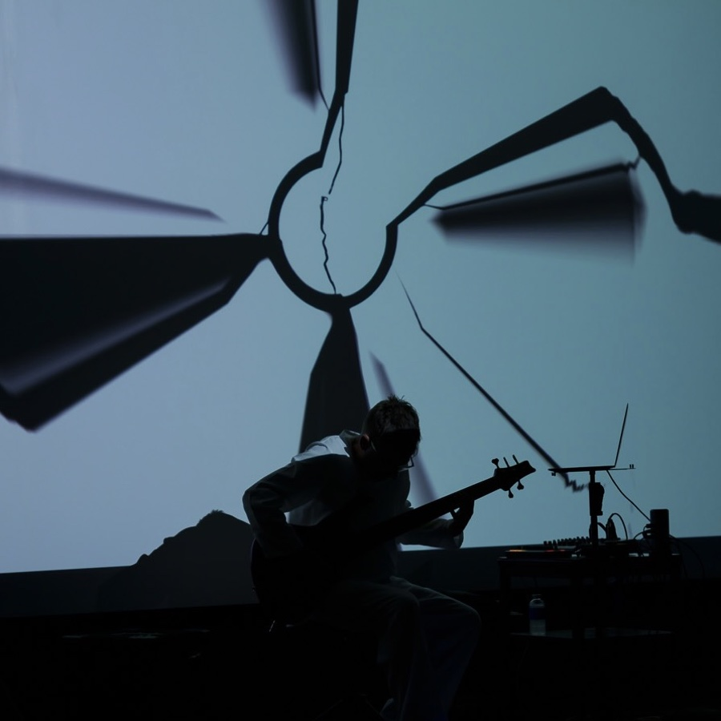

I bring worlds together
in sound.
I've spent my career exploring new musical worlds and bringing them together. Jazz club gigs in Tokyo that led to arena tours with some of Asia's biggest stars. Computer DJ battles in Hong Kong that led me to LA's warehouse underground.
Then the better part of a decade recording and performing with Jon
Hassell, my lifelong inspiration, co-producing his final two albums.
Now I'm exploring new musical terrain with two forthcoming releases, continuing my Fourth World explorations into the future.
Selected releases
Hear it
Ambient Bass Guitar, streaming from Bandcamp. Press play.
A working life in sound
-
1991
New York City
Full performance scholarship to the New School Jazz program in Manhattan; studied with Gary Peacock and Reggie Workman.
-
1991-94
Tokyo
Working jazz bassist across the city, playing Tokyo's jazz clubs with a wide range of players and getting involved in the city's burgeoning acid jazz scene.
-
1995-2001
Hong Kong
Bass guitar for some of the biggest Asian pop stars: five world tours and a long run of album sessions. Off tour, a fixture in Hong Kong's clubs and at the Foreign Correspondents' Club, often alongside US jazz musician Allen Youngblood.
Turned experimental laptop DJ around 2000 and formed Digital Cutup Lounge with British partner Stephen Ives: early innovators in live laptop performance, cutting styles of music against each other. Two albums, Cutup Mixdown and Network Effects. -
2000s
Los Angeles
Experimental electro and ambient groove in LA's underground scene. Performed with Aaron Raab as Electro Tec Services and under my own name at warehouses and other underground venues across the city.
Later I joined Native Instruments, where I trained artists including Herbie Hancock and Steve Vai and wrote the manual for the Massive synthesizer. -
2000s
Film
Sound design and effects for numerous films, including Thomas Newman's Oscar-nominated score for Pixar's WALL-E.
-
2010s
The Jon Hassell band
Core member through the decade. Recorded, co-produced and performed on Listening to Pictures (2018) and Seeing Through Sound (2020). Also performed on two European tours, including Hassell's final concert, London 2015, soon to be released by Ndeya Records.
-
Now
Ambient producer and performer
Chapman Stick, bass guitar and live electronics, under my own name.

Lineage
Jon Hassell's music set my direction when I was a teenager learning jazz. Thirty years later, I was in his band.
By the time I met Jon, I had already spent two decades blending musical cultures on my own, from Tokyo jazz clubs to Cantopop arenas to cut-up laptop sets in Hong Kong, which is why he brought me into the band. I recorded, co-produced, and performed on his final two albums. Playing that music was the fulfillment of a lifetime's direction. Carrying it forward is what comes next.
Work with me
Labels
Live at the Philosophical Research Society is finished and seeking a home. The next Fourth World record is close behind it.
Festivals and promoters
The Fourth World project live, and solo ambient sets on Chapman Stick and bass guitar.
Film and media
Sound design and score work, from the LA underground to Pixar's WALL-E. Commissions welcome.